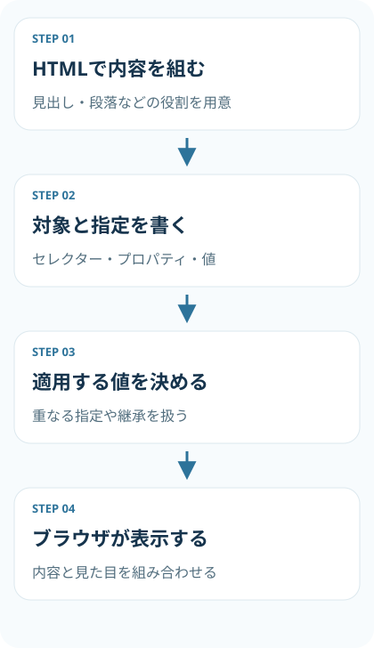

お店のページで、店名は大きく、説明文は落ち着いた色で、写真のまわりには余白がある。内容を伝えるだけでなく、読みやすく整えるための工夫が入っています。その見た目の指定に使われるのがCSSです。前の記事で見たHTMLの役割と分けながら、営業時間の見出しを青くする場面を考えてみましょう。
01 — DIGITAL BASICS
内容の構造に、見た目の指定を重ねる
CSSはCascading Style Sheetsの略です。HTMLなどで組まれた文書を、どのように見せるかを記述するための言語です。HTMLが見出しや段落などの構造を示すのに対し、CSSでは文字の色、大きさ、余白、配置などを指定できます。
たとえば「営業時間」という文章を見出しとして表すことと、その見出しを青くすることは分けて考えられます。文章の役割を変えなくても、見た目だけを調整できるのです。なお、作り手が独自のCSSを用意しなくても、ブラウザの標準のスタイルによって見出しなどは表示されます。
02 — DIGITAL BASICS
まず対象を選び、変えたい性質と値を書く
CSSでは、どの要素へ指定するかをセレクターで選びます。たとえば h2 { color: blue; } という短い例なら、h2という見出しの要素が対象で、colorという性質にblueという値を指定しています。この例では、対象の文字を青くする意図を表せます。
colorのように変更する性質をプロパティと呼び、blueはその値です。ページのすべてに同じ指定を当てる必要はありません。要素の種類や、作り手が付けたclassなどを使って対象を絞れます。「どこを」「何について」「どうするか」と区切ると、短いCSSを読む入口になります。
この節の参考：資料1

03 — DIGITAL BASICS
指定が重なったときには、決め方がある
一つの見出しに複数の色の指定が当たることもあります。CSSは、重なった指定からどの値を使うかを決める仕組みを持っています。この決定の仕組みがカスケードです。単純に「最後に書かれたものが、どんな場合でも勝つ」とは言えません。指定の出所や重要度、対象の選び方なども関わります。
また、文字色などは、外側の要素の指定を内側へ引き継ぐ場合があります。これを継承と呼びます。ただしすべてのプロパティが同じように引き継がれるわけではありません。見えている色は、その文字のすぐ近くに書かれた指定だけで決まるとは限らない、と覚えておくとよいでしょう。
この節の参考：資料2
04 — DIGITAL BASICS
見た目を変えても、内容の意味は大切
CSSで文字を大きくしただけで、その文章がHTML上の見出しになるわけではありません。読む人や内容を扱う仕組みに役割を伝えるには、HTMLの構造も大切です。見た目と構造の両方が組み合わさって、読みやすいページにつながります。
スマホとパソコンで並び方が変わるページにも、こうした見た目を整える仕組みが関わります。今回は細かな指定方法を覚えるより、内容と構造を用意し、対象へCSSの指定を当て、ブラウザが表示を作るという関係を押さえましょう。いつものページを見たとき、「何が書いてあるか」と「どう見せているか」を分けて眺める練習になります。
REMEMBER
今日覚えておきたい3つのこと
- 01
CSSは、文書の色や余白、配置などの見た目を指定する言語。
- 02
セレクターで対象を選び、プロパティと値で指定する。
- 03
指定の重なりや継承にも規則があり、HTMLの構造とは役割が違う。
参考資料・情報確認日
情報確認日：2026年11月28日。通信の基本を理解するために一部を簡略化しています。